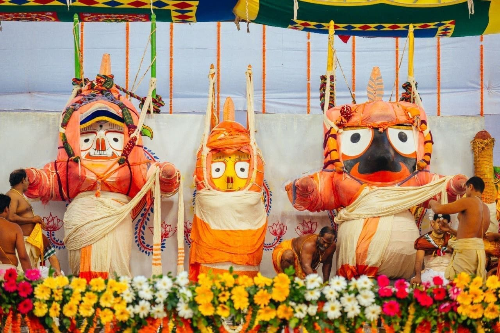

Odisha
Puri: Abode of Jagannath
Welcome to Purushottama Kshetra, the sacred abode of Lord Jagannath, the Lord of the Universe. As one of the original four Char Dhams, Puri is a Tirtha of immense spiritual potency, where the Lord resides with his brother Balabhadra and sister Subhadra. A pilgrimage to Puri is an opportunity to witness the living, breathing traditions of devotion that have captivated saints and sages for millennia.
The Puranic Origin: The Unfinished Deities
The Skanda Purana narrates the enchanting story of King Indradyumna, a great devotee who was divinely instructed to find a sacred wooden log (*dāru brahma*) and carve the deities. The celestial architect Vishwakarma agreed to do the work in a locked room, on the condition that he not be disturbed for 21 days. The impatient king, hearing no sound, opened the door early. Vishwakarma vanished instantly, leaving the deities in their unique, unfinished form—with large, round eyes and no distinct hands or feet. This form is a profound reminder that the divine is beyond human conception and form.
Key Spiritual Experiences
Jagannath Temple Darshan: The darshan of the divine trinity is the primary goal of the yatra. The atmosphere inside the temple is charged with devotion. A unique feature is the temple flag (*patita pāvana bāna*), which miraculously flows against the wind.
Rath Yatra: The Festival of Chariots. This is the most famous festival of Puri, where the deities leave the main temple to travel to the Gundicha Temple. Millions of devotees pull the massive, ornate chariots, believing that even a touch of the ropes grants immense spiritual merit. It is a spectacle of unparalleled devotion.
Mahaprasad: The Great Offering. The food cooked in the temple's giant kitchen is first offered to Lord Jagannath and is then considered *Mahaprasad*. This sacred food is available to all, regardless of caste or creed, and is believed to be non-different from the Lord himself. Partaking in the Mahaprasad is a vital part of the pilgrimage.